Login
구글 계정으로
팀 로그인
허용된 팀원만 들어올 수 있는 워크스페이스
- 구글 OAuth 로그인을 직접 구현 (DB 세션 + httpOnly 쿠키)
- 허용 이메일 목록으로 접근 제한
- 모든 페이지·API를 한 곳(proxy)에서 보호
리드 관리부터 미팅 노트 요약, 캘린더·Gmail 연동,
계약서 자동 작성까지 — 실제로 동작하는 웹앱
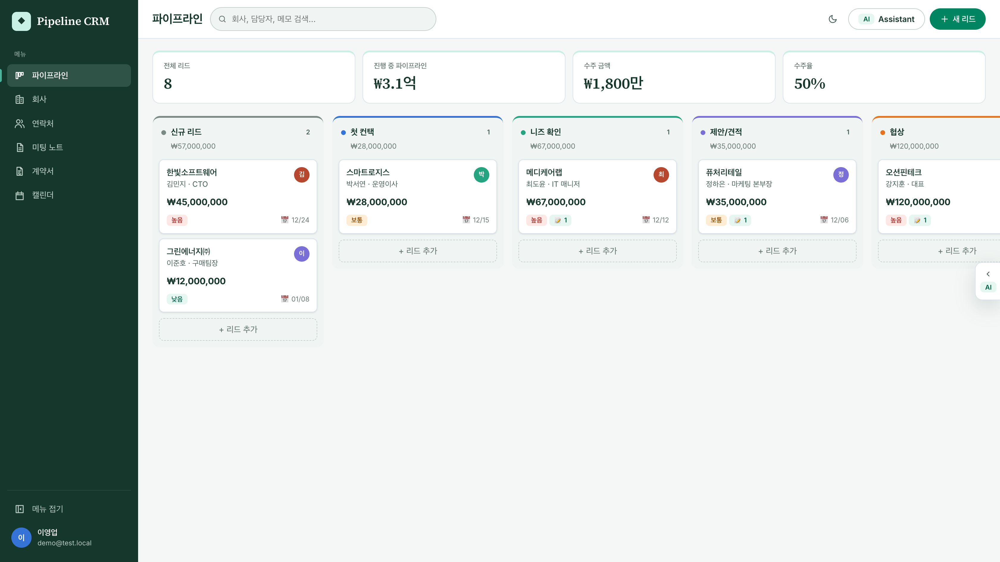
단계별 칸반 보드, 드래그 앤 드롭 이동, 금액·수주율 집계
회사·담당자 마스터 데이터와 리드 연결, 중복 방지
녹음 → 화자 구분 전사 → AI 요약·다음 액션 자동 정리
“이번 주 챙길 리드는?” — 내 CRM 데이터로 답하는 채팅
다음 미팅을 노트에서 뽑아 캘린더에 자동 등록
리드별 메일을 모아 AI가 요약, 계약서 메일 발송
대화로 빈칸을 채우는 문서 작성, PDF 생성
Vercel + Supabase 배포, 다크 모드, 모바일 화면
코드는 Claude Code에게 한국어로 요청하며 작성합니다. 요구사항 문서 → 구현 → 테스트 → 배포까지 같은 흐름을 반복합니다.
허용된 팀원만 들어올 수 있는 워크스페이스
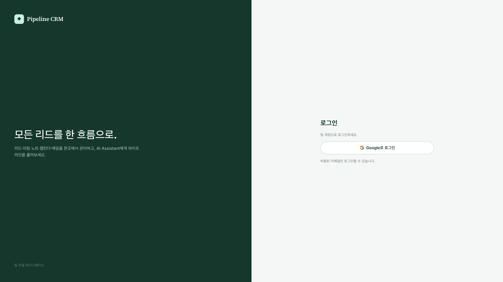
신규 리드 → 첫 컨택 → 니즈 확인 → 제안/견적 → 협상 → 수주/실주
카드를 누르면 리드 정보와 관련 기록을 한 화면에서
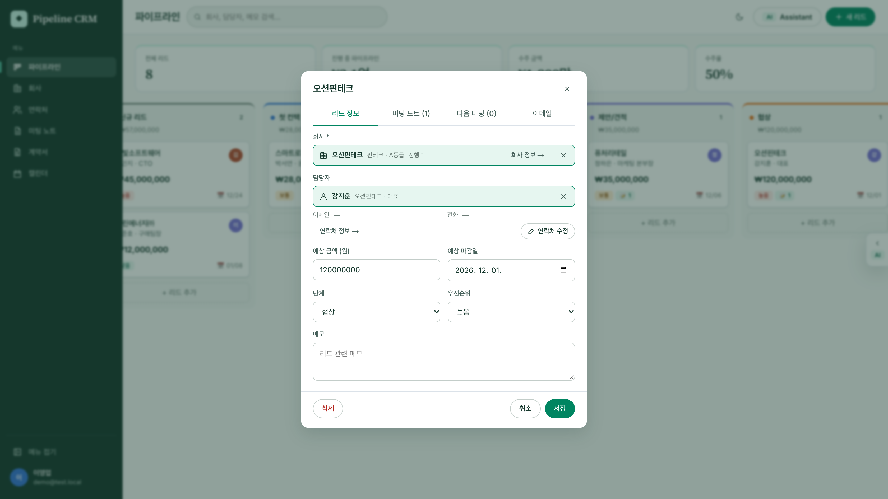
“이번 주에 우선 챙겨야 할 리드 알려줘”
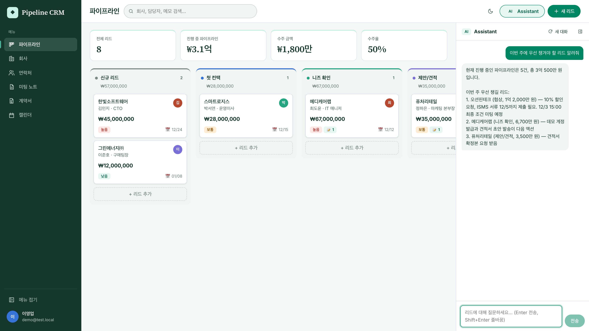
미팅이 끝나면 요약과 다음 할 일이 자동으로
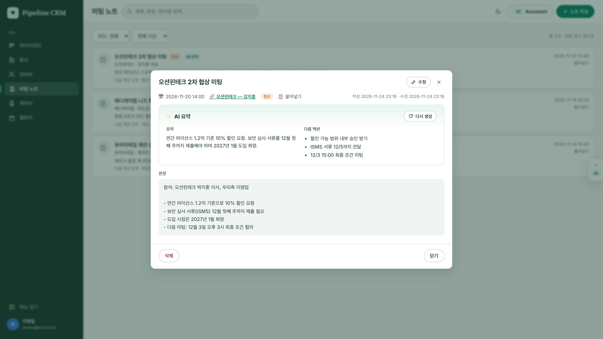
흩어진 리드를 회사·사람 단위로 묶어 보기
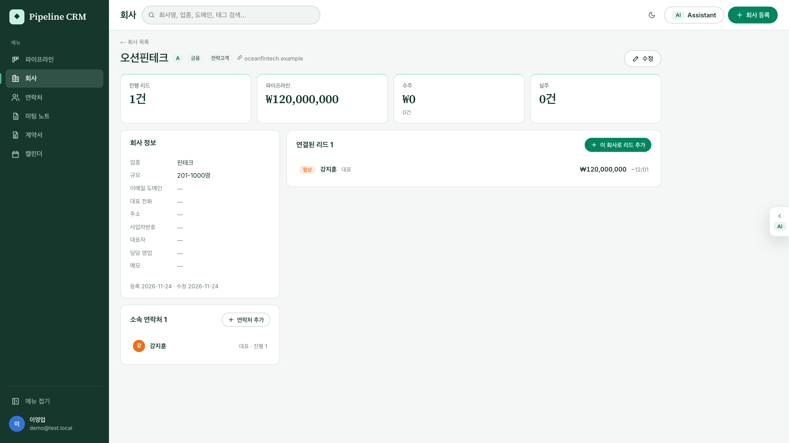
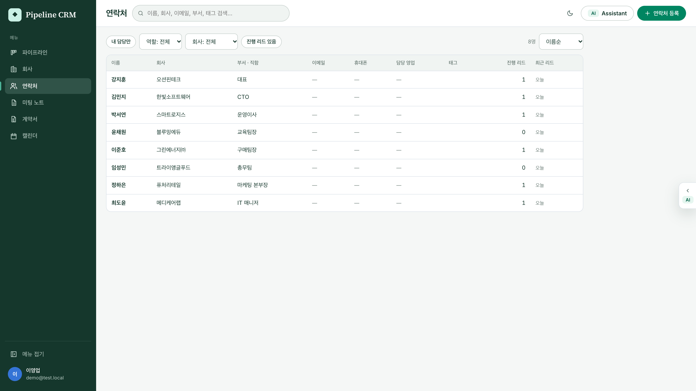
CRM에서 등록한 일정은 [AI CRM] 표시
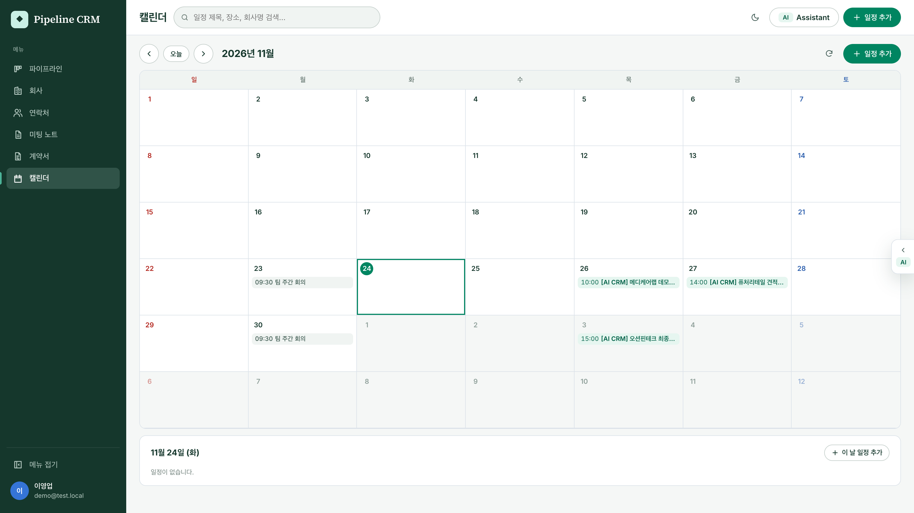
“CRM 라이선스 20개 단가 50만원”이라고 말하면 표가 채워짐
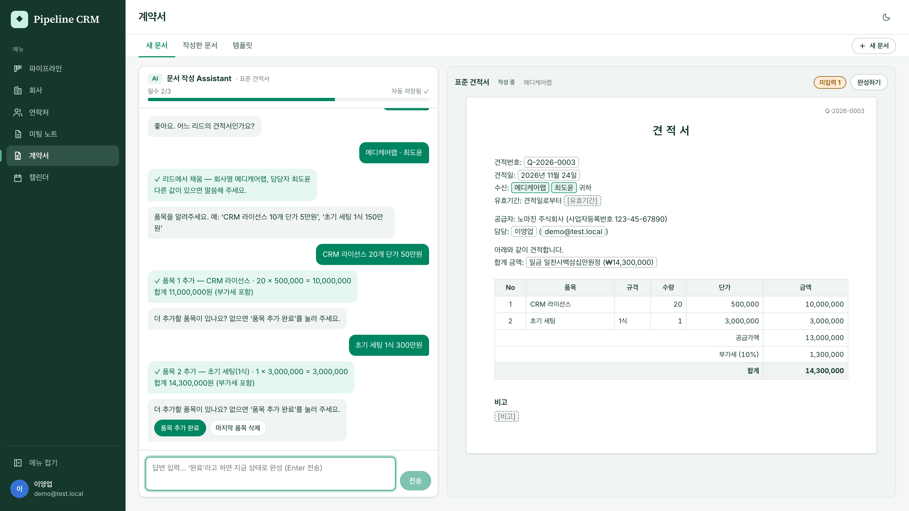
본문의 {{항목}}이 질문이 됩니다
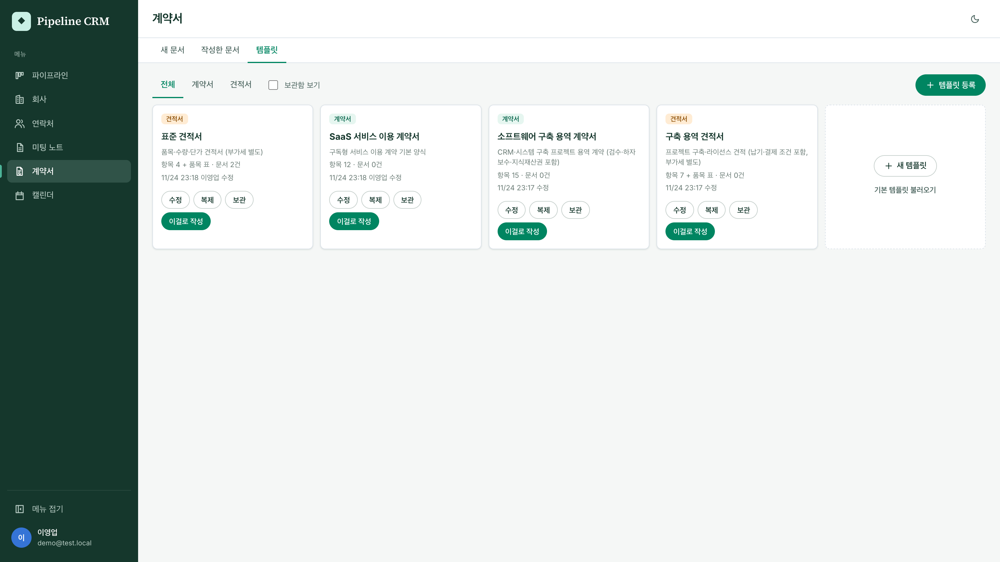
필요한 권한만, 필요할 때 받기
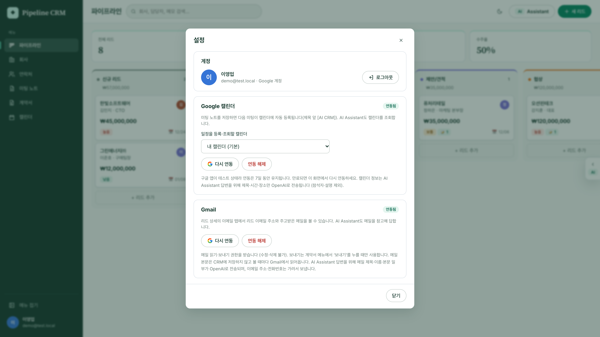
하나의 디자인 시스템으로 일관된 화면
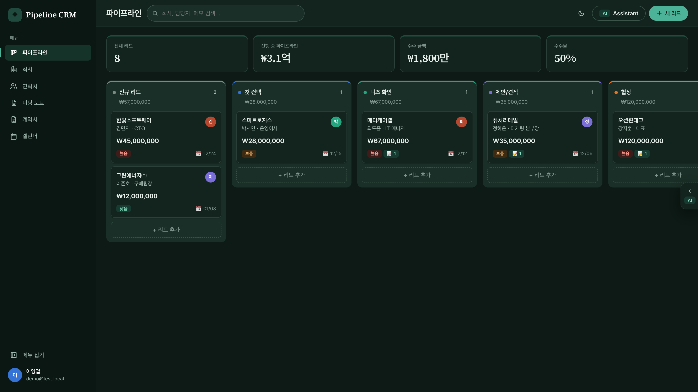
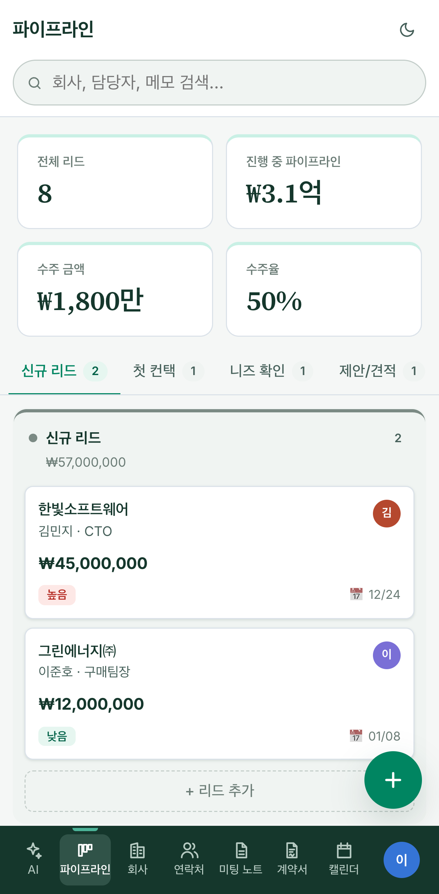
Next.js 16 (App Router) · React 19 · TypeScript
일반 CSS + 디자인 토큰
Route Handlers (REST API)
PostgreSQL + SQL 직접 작성 (pg)
OpenAI — 채팅 · 도구 호출 · 음성 전사 · 요약
개인정보 마스킹
Google 로그인 · Calendar · Gmail (REST)
pdf-lib로 한글 PDF
Vitest (unit · integration)
Playwright (e2e, 실제 Chrome)
GitHub push → Vercel 자동 배포
Supabase (PostgreSQL, RLS)
CLAUDE.md에 프로젝트 규칙을 적어 두고, 기능마다 “요구사항 문서 → 계획 → 구현 → 테스트 → 커밋” 순서로 AI에게 요청합니다. 병렬 작업은 git worktree로 분리합니다.
HTML 한 장짜리 칸반 CRM을 AI로 만들어 보기
Next.js로 옮기고 PostgreSQL에 저장, API 만들기
GitHub · Vercel · Supabase로 인터넷에 공개
OpenAI 연동, CRM 데이터로 답하는 채팅
녹음 · 전사 · 자동 요약 기능
로그인 · 캘린더 · Gmail
데이터 모델 확장과 문서 자동화
자동 테스트, 디자인 시스템, 모바일
각 단계마다 무엇을 AI에게 어떻게 요청했는지 프롬프트 기록을 함께 보며 따라 합니다.
코딩 경험이 많지 않아도 괜찮습니다.
AI에게 무엇을, 어떤 순서로 요청할지 — 그 방법을 실습으로 익힙니다.